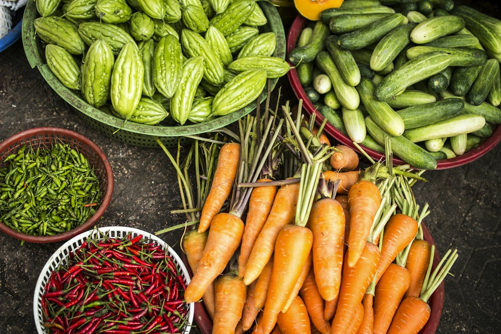

Bajra + Maize dose guide — Kharif (बाजरा + मक्का)

| Crop | Basal (indicative/acre) | Top-dress |
|---|---|---|
| Bajra (बाजरा) | ~20–25 kg DAP or equivalent NPK | ~25–30 kg urea at 25–30 days with rain |
| Maize (मक्का) | ~50 kg DAP + ~20 kg MOP | Urea in 2 splits (knee-high + tasseling) |
Kharif rule: don't over-apply basal if monsoon is late — split nitrogen after good establishment. Hybrid bajra seed rate + thinning matter as much as fertilizer.
Kharif queries: WhatsApp +91 79786 01417 · Call